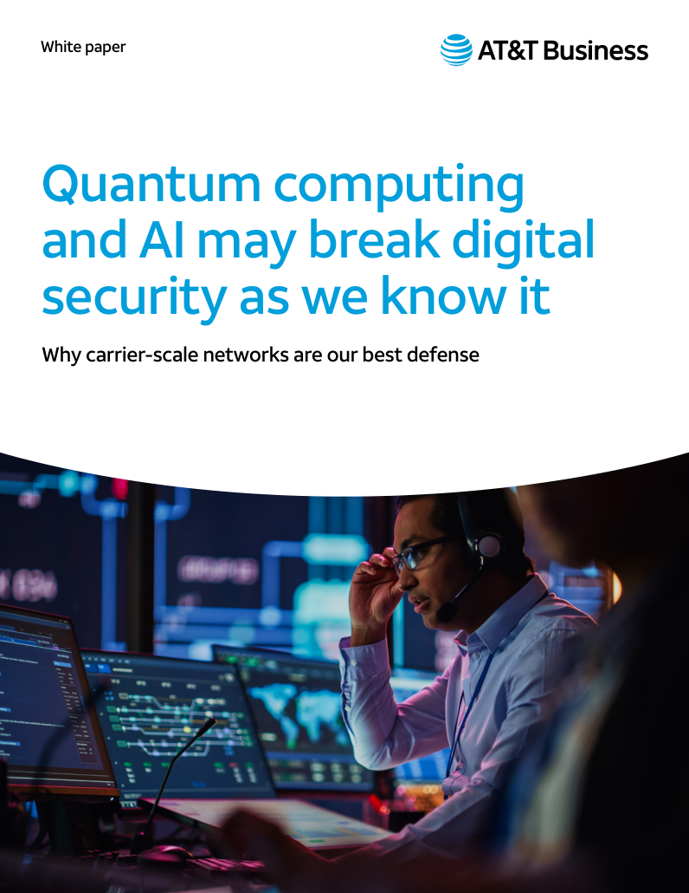

Buyer education · AT&T Business
Smart security, small business
A practical guide to reducing cyber risk and building a plan that can grow with the business.
Contribution: authored buyer educationRead the guide ↗Selected work
I turn complex products and market questions into stories, content, and tools people can use. Here’s the work that made it into the world.

Read the white paper ↗Behind the featured work
Research-led thought leadership connecting quantum computing, AI, and carrier-scale network defense.
Contribution: authored thought leadership · AT&T BusinessFrom practical buyer education to a visual explanation of network security.
Buyer education · AT&T Business
A practical guide to reducing cyber risk and building a plan that can grow with the business.
Contribution: authored buyer educationRead the guide ↗Video · AT&T Business
A visual explanation of network-native threat detection and response.
Contribution: messaging, script, and production collaborationPublished portfolio
Explore by format, company, or subject. Credits identify my contribution within the wider client team.
Why carrier-scale networks are our best defense. Research-led thought leadership connecting AI, quantum risk, and network defense.
Accessible cybersecurity guidance that helps small businesses develop a plan that can grow with them.
No matching work. Try a different search or choose All work.
Work with me
Tell me what you’re trying to build, fix, or move forward. We’ll start with a complimentary conversation and agree on the scope, fee, and timing before any paid work begins.
Prefer email? Write to me ↗